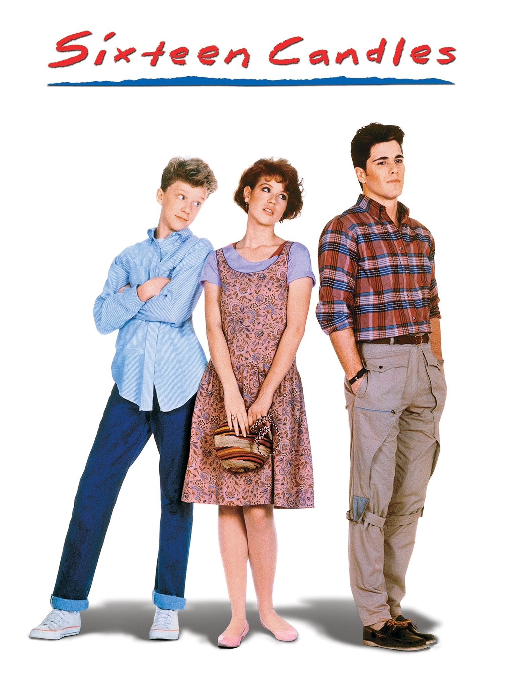

The movie starts with Sam’s family getting ready for another chaotic day, but she's also upset because no one in her family knows it's her Sixteenth birthday . She arrives at school and waits by her friend’s locker before class starts. She sat at her desk behind a senior boy she liked named Jake Ryan but he had a popular, rich girlfriend. By the end of the day, she was ready to go home on the bus with noisy students. On the way home, a boy who liked her named Farmer Ted started flirting with her, but he gave her the ick. Later that night, there was a dance at the high school. She wanted to dance with Jake, but Farmer Ted started dancing in front of Sam. She left the gym and went home. There was also a party she missed at Jake’s house that his girlfriend had, but the teens who were invited made a huge mess. It was the morning of her older sister’s wedding; Sam could not stop thinking about her terrible. After the wedding, she saw Jake waiting for her.